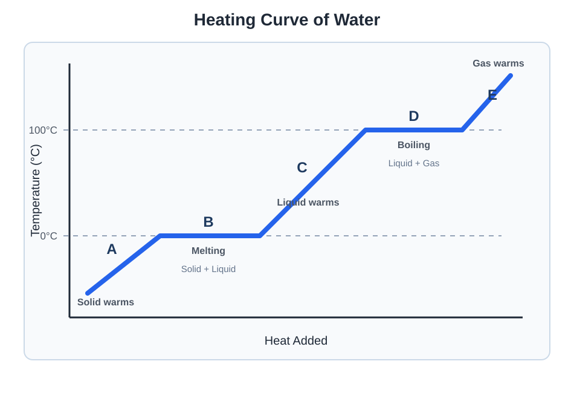

Thermodynamics
Explore how energy is transferred during physical and chemical processes and learn how heat, enthalpy, phase changes, and chemical bonds relate to energy.
Topics
Heat Transfer and Calorimetry
Distinguish heat from temperature and calculate energy transfer using specific heat, calorimetry, and thermal equilibrium.
Phase Changes and Heating Curves
Analyze heating curves and calculate the energy involved when substances change temperature or physical state.
Enthalpy Changes
Calculate reaction enthalpy using energy diagrams, bond enthalpies, standard enthalpies of formation, and Hess’s law.
Heat Transfer and Calorimetry
Thermodynamics examines the transfer of energy between a system and its surroundings. In chemistry, the system is the reaction or process being studied, while the surroundings include everything outside that system.
Heat and Temperature
Heat and temperature are related, but they do not mean the same thing.
| Quantity | Meaning |
|---|---|
| Temperature | A measure related to the average kinetic energy of the particles in a substance |
| Heat | Energy transferred between objects because of a temperature difference |
Heat naturally transfers from an object at a higher temperature to an object at a lower temperature until the objects reach thermal equilibrium.
Endothermic and Exothermic Processes
The sign of heat, q, depends on whether energy enters or leaves the system.
| Process | Direction of Heat Transfer | Sign of q for the System |
|---|---|---|
| Endothermic | Heat enters the system | Positive |
| Exothermic | Heat leaves the system | Negative |
If the surroundings become cooler, the system absorbed heat and the process is endothermic.
Specific Heat Capacity
Specific heat capacity is the amount of energy required to raise the temperature of one gram of a substance by one degree Celsius.
In this equation:
- q is the heat absorbed or released.
- m is the mass of the substance.
- c is its specific heat capacity.
- ΔT is the change in temperature.
A substance with a large specific heat capacity requires more energy to produce a given temperature change than the same mass of a substance with a smaller specific heat capacity.
Example: Heating a Metal
A 75.0 g sample of a metal has a specific heat capacity of 0.385 J/(g·°C). How much heat is absorbed when its temperature increases from 22.0°C to 68.0°C?
First, calculate the temperature change:
Substitute the values into the heat equation:
The metal absorbs 1.33 kJ of heat. The value is positive because the metal gains energy.
Heat Capacity
Heat capacity describes the energy needed to increase the temperature of an entire object or calorimeter by one degree. Unlike specific heat capacity, it applies to the complete object rather than one gram of material.
In this equation, C is the object’s heat capacity, commonly measured in J/°C.
Conservation of Energy
Energy cannot be created or destroyed. Therefore, heat lost by one part of an isolated system must be gained by another part.
For example, if a hot metal sample loses 500 J of heat, the cooler water surrounding it must gain 500 J, assuming no energy escapes to the outside environment.
Thermal Equilibrium Calculations
Example: Mixing Water at Different Temperatures
A 50.0 g sample of water at 80.0°C is mixed with 100.0 g of water at 20.0°C. Assume no heat escapes and determine the final temperature.
Heat lost by the warmer water equals heat gained by the cooler water:
Because both samples are water, the same specific heat capacity appears in both terms and can be canceled.
The final temperature must fall between the two initial temperatures, which supports the calculated result.
Calorimetry
Calorimetry is the experimental measurement of heat transferred during a physical or chemical process. A calorimeter reduces energy exchange with the outside environment.
In a coffee-cup calorimeter, a reaction occurs in a solution. The temperature change of the solution is used to determine how much heat the reaction released or absorbed.
Example: Coffee-Cup Calorimetry
A reaction occurs in 100.0 g of solution. The temperature increases from 22.5°C to 28.7°C. Assume the solution has a specific heat capacity of 4.184 J/(g·°C).
Calculate the heat of the reaction. Then calculate the energy released per mole if 0.0500 mol of reactant was consumed.
First, calculate the temperature change:
Calculate the heat absorbed by the solution:
The solution absorbed heat, so the reaction released the same amount:
Calculate the energy released per mole:
The negative sign shows that the reaction is exothermic.
Accounting for the Calorimeter
Some problems provide the heat capacity of the calorimeter. In that case, both the solution and the calorimeter absorb energy.
Common Calorimetry Assumptions
- No heat escapes into the outside environment.
- The solution has the same specific heat capacity as water when the problem tells you to make that assumption.
- The solution’s mass may be approximated by adding the masses of the combined solutions.
- The reaction and solution exchange equal amounts of heat with opposite signs.
Practice Questions
Question 1: Calculating Heat
How much heat is required to increase the temperature of 125 g of water from 18.5°C to 32.0°C? Use a specific heat capacity of 4.184 J/(g·°C).
Show solution
First, calculate the temperature change:
Use the specific-heat equation:
The water absorbs 7.06 kJ of heat.
Question 2: Finding Specific Heat Capacity
A 50.0 g metal sample absorbs 1.80 kJ of heat as its temperature increases from 20.0°C to 95.0°C.
Calculate the metal’s specific heat capacity.
Show solution
Convert the heat from kilojoules to joules:
Calculate the temperature change:
Rearrange the heat equation to solve for c:
Question 3: Conservation of Energy
A warm metal sample is placed into 100.0 g of water. The water’s temperature increases from 22.0°C to 25.0°C. Assume no heat escapes.
Calculate the heat absorbed by the water and the heat released by the metal.
Show solution
The water’s temperature change is:
The water gains heat, so its q is positive. The metal loses the same amount of energy.
Question 4: Reaction Calorimetry
A reaction occurs in 150.0 g of solution. The temperature increases from 21.3°C to 26.8°C. Assume the solution has a specific heat capacity of 4.184 J/(g·°C).
If 0.0750 mol of reactant is consumed, calculate the heat released per mole of reactant.
Show solution
Calculate the temperature change:
Calculate the heat absorbed by the solution:
The solution absorbs heat, so the reaction releases the same amount.
Calculate the heat released per mole:
The negative result indicates an exothermic reaction.
Question 5: Including the Calorimeter
A reaction occurs in 80.0 g of solution inside a calorimeter with a heat capacity of 35.0 J/°C. Both the solution and calorimeter increase in temperature by 4.0°C.
Assume the solution has a specific heat capacity of 4.184 J/(g·°C). Calculate the heat of the reaction.
Show solution
Calculate the heat absorbed by the solution:
Calculate the heat absorbed by the calorimeter:
Add the energy absorbed by both surroundings:
The reaction has the opposite sign:
Question 6: Calorimetry Error Analysis
A student uses a poorly insulated coffee-cup calorimeter to measure the energy released by an exothermic reaction. Some heat escapes into the room.
How will this affect the measured temperature change and the calculated magnitude of the reaction’s heat?
Show solution
Because some heat escapes into the room, less heat is absorbed by the solution. The measured temperature increase will therefore be too small.
Because q is calculated using ΔT, the calculated amount of heat released will also have a magnitude that is too small.
The calculated value for an exothermic process would be less negative than the value obtained under perfectly insulated conditions.
Watch: Calorimetry
Watch a worked example showing how mass, specific heat, temperature change, and energy conservation are used in calorimetry calculations.
Phase Changes and Heating Curves
Energy can increase a substance’s temperature or cause it to change physical state. A heating curve shows how temperature changes as energy is continuously added to a substance.
Common Phase Changes
| Phase Change | Direction | Energy Change |
|---|---|---|
| Melting | Solid → Liquid | Energy absorbed |
| Freezing | Liquid → Solid | Energy released |
| Vaporization | Liquid → Gas | Energy absorbed |
| Condensation | Gas → Liquid | Energy released |
| Sublimation | Solid → Gas | Energy absorbed |
| Deposition | Gas → Solid | Energy released |
Moving toward a more organized phase—gas to liquid to solid—releases energy.
Temperature Changes Within One Phase
When a substance remains in one physical state, added energy increases the average kinetic energy of its particles. The temperature therefore increases.
Different phases of the same substance may have different specific heat capacities. A complete calculation may therefore require a different value of c for the solid, liquid, and gas.
Energy During a Phase Change
During a phase change, the temperature remains constant even though energy continues to enter or leave the substance.
The transferred energy changes the arrangement and attractions between particles rather than changing their average kinetic energy.
• Temperature remains constant
• Average kinetic energy remains constant
• Potential energy changes
• More than one physical phase is present
Enthalpy of Fusion
The molar enthalpy of fusion, ΔHfus, is the energy required to melt one mole of a substance at its melting point.
Melting has a positive energy change. Freezing has the same magnitude but the opposite sign.
Example: Melting Ice
Calculate the energy required to melt 25.0 g of ice at 0°C. The molar enthalpy of fusion of water is 6.01 kJ/mol.
First, convert the mass of water to moles:
Melting the ice requires 8.34 kJ of energy.
Enthalpy of Vaporization
The molar enthalpy of vaporization, ΔHvap, is the energy required to vaporize one mole of a substance at its boiling point.
Vaporization has a positive energy change. Condensation has the same magnitude but the opposite sign.
Reading a Heating Curve

| Segment | Process | Main Energy Change |
|---|---|---|
| A | Solid warming | Kinetic energy increases |
| B | Melting | Potential energy increases |
| C | Liquid warming | Kinetic energy increases |
| D | Boiling | Potential energy increases |
| E | Gas warming | Kinetic energy increases |
Sloped Sections of a Heating Curve
On a sloped section, the substance remains in one phase and its temperature changes. Use:
A steeper slope means that a smaller amount of energy is required for a given temperature increase. For equal masses, this corresponds to a smaller specific heat capacity.
Horizontal Sections of a Heating Curve
On a horizontal section, the substance changes phase while its temperature remains constant.
Use one of the following equations:
A longer horizontal section represents a phase change requiring a greater amount of energy under the conditions shown.
Calculations Involving Multiple Segments
If a substance undergoes both temperature changes and phase changes, calculate the heat for each separate segment and then add the results.
Example: Heating and Melting
A 10.0 g sample of ice is heated from −10.0°C to 20.0°C. This process contains three separate energy calculations:
- Warm the solid ice from −10.0°C to 0°C.
- Melt the ice at 0°C.
- Warm the liquid water from 0°C to 20.0°C.
Each part must be calculated separately because the appropriate equation or specific heat capacity changes between segments.
Practice Questions
Question 1: Reading a Heating Curve
Refer to the labeled heating curve. For each segment, identify whether kinetic energy or potential energy primarily increases.
Show solution
- Segment A: Kinetic energy increases as the solid warms.
- Segment B: Potential energy increases as the solid melts.
- Segment C: Kinetic energy increases as the liquid warms.
- Segment D: Potential energy increases as the liquid boils.
- Segment E: Kinetic energy increases as the gas warms.
Temperature changes during sloped sections, so average kinetic energy changes. Temperature remains constant during horizontal sections, while particle attractions are overcome and potential energy changes.
Question 2: Enthalpy of Fusion
Calculate the energy required to melt 45.0 g of ice at 0°C. Use a molar mass of 18.02 g/mol and ΔHfus = 6.01 kJ/mol.
Show solution
First, convert the mass to moles:
Calculate the energy required for melting:
Melting the ice requires 15.0 kJ of energy.
Question 3: Condensation
A 1.50 mol sample of water vapor condenses at its condensation point. Calculate the energy change if ΔHvap = 40.7 kJ/mol.
Show solution
Vaporization absorbs energy, but condensation is the reverse process and releases the same amount of energy per mole.
The water releases 61.1 kJ. The negative sign indicates that energy leaves the water.
Question 4: Temperature During a Phase Change
A sample is boiling while energy is continuously added. A student claims that the added energy must be increasing the average kinetic energy of the particles.
Is the student correct? Explain.
Show solution
The student is not correct. During boiling, the temperature remains constant, so the particles’ average kinetic energy also remains constant.
The added energy increases potential energy by separating particles and overcoming intermolecular attractions as the liquid becomes a gas.
Question 5: A Multistep Heating Calculation
Calculate the total energy required to convert 18.0 g of ice at −15.0°C into liquid water at 25.0°C.
Use the following values:
- Specific heat of ice: 2.09 J/(g·°C)
- Specific heat of liquid water: 4.184 J/(g·°C)
- Molar enthalpy of fusion: 6.01 kJ/mol
- Molar mass of water: 18.02 g/mol
Show solution
This process requires three separate calculations.
Step 1: Warm the Ice to 0°C
Step 2: Melt the Ice
Step 3: Warm the Liquid Water
Add the Three Energy Changes
The complete process requires approximately 8.44 kJ of energy.
Question 6: Comparing Heating-Curve Plateaus
On a heating curve with heat added on the horizontal axis, the boiling plateau is much longer than the melting plateau. What does this indicate?
Show solution
The longer boiling plateau indicates that vaporization requires more energy than melting for the amount of substance represented.
During vaporization, particles must become much more widely separated. Overcoming enough intermolecular attraction to form a gas generally requires more energy than rearranging a solid into a liquid.
Therefore, ΔHvap is generally greater than ΔHfus.
Watch: Heating Curves and Phase Changes
Watch a worked example showing how to interpret a heating curve and calculate energy across temperature changes and phase changes.
Enthalpy Changes
This lesson will explain exothermic and endothermic processes, bond enthalpy, standard enthalpy of formation, and Hess’s law.